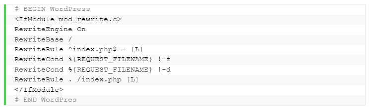

Qué es el archivo .htaccess: Guía completa
El archivo htaccess (acceso de hipertexto) es un archivo oculto que se utiliza para configurar funciones adicionales para sitios web alojados en el servidor web Apache. Con él, puedes reescribir la URL, proteger directorios con contraseña, habilitar la protección de enlaces directos, no permitir el acceso a direcciones IP específicas, cambiar la zona horaria de tu sitio web o alterar la página de índice predeterminada, y mucho más. Aquí aprenderás a localizar y crear archivos .htaccess.
¿Cómo localizar y abrir el archivo .htaccess?
Vamos a mostrar cómo localizar y abrir el archivo .htaccess tanto en el hPanel de Hostinger con en cPanel.
hPanel
Encontrar y editar el archivo en el hPanel de Hostinger sólo requiere de unos pocos clics. Así es como se hace:
- Una vez que hayas iniciado sesión en tu panel de control de WordPress, utiliza la función de búsqueda para encontrar el administrador de archivos ubicado en la categoría Archivos.
-
Por defecto, el archivo .htaccess no es invisible en el directorio public_html de hPanel, por lo que puede acceder inmediatamente al archivo y a su contenido haciendo clic con el botón derecho y seleccionando Open o Edit.

cPanel
Si estás usando cPanel, el proceso es más o menos similar.
- Accede al Administrador de Archivos -> public_html..
- Si no encuentras el archivo, ve a la configuración en el menú superior derecho y marca la opción de mostrar archivos ocultos para habilitar la visualización.
¿Cómo crear un archivo .htaccess?
Si el archivo .htaccess no está presente, esta es la forma de crear uno. Este método aplica tanto para hPanel como para cPanel:
- Haz clic en el botón de nuevo archivo en el menú superior.
- Ingresa .htaccess como nombre del archivo, inserta el código que aparece a continuación y presiona Create para guardar los cambios. 
Conclusión
Has aprendido a localizar y crear el archivo .htaccess usando el Administrador de Archivos. .htaccess te permite crear redireccionamientos de sitios web, establecer páginas por defecto, proteger con contraseña los directorios y mucho más.
| Realizado por: | Siguenos en las redes sociales: |
| Begoña Calvo, Daniel Artigues y Carlos Agueda |


|